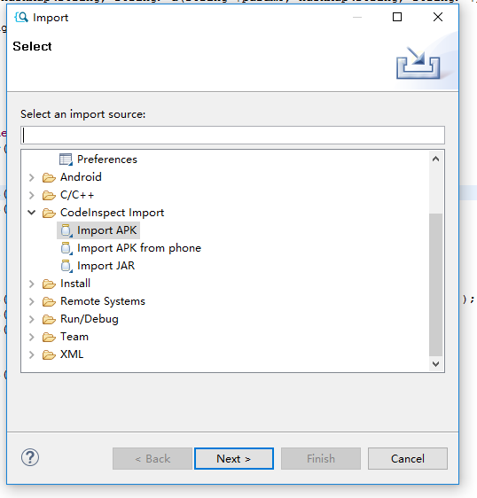
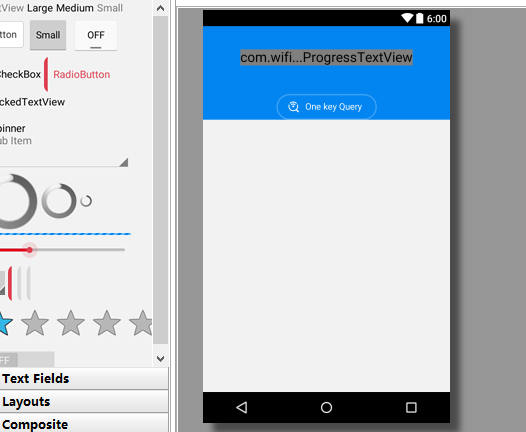
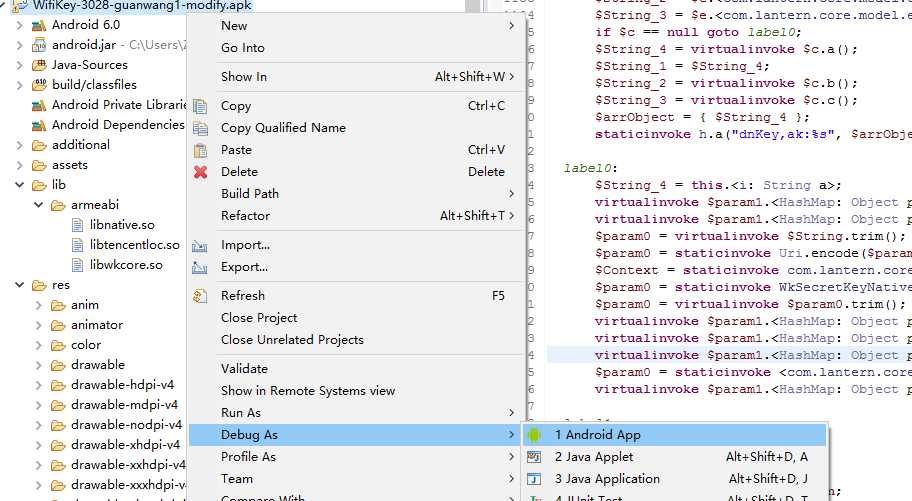
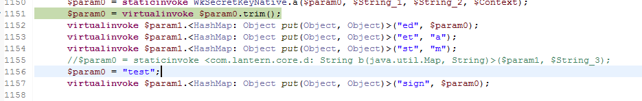
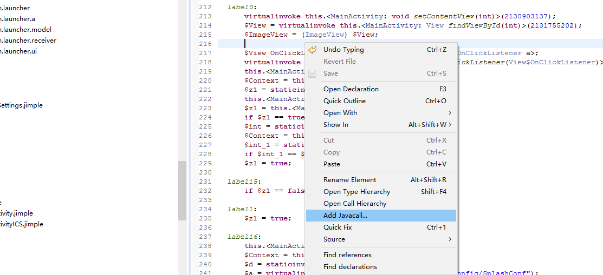
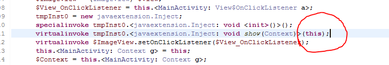
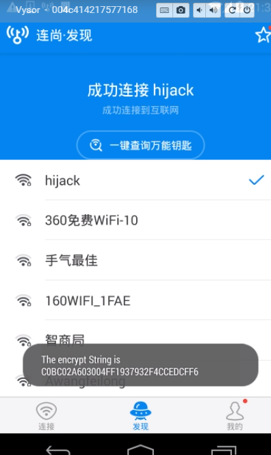

CodeInspect是由德国Paderborn University和TU Darmstadt的软件安全团队研发的一款基于Jimple的Android应用分析工具。CodeInspect的软件是Eclipse框架开发的，所以我们可以像使用IDE一样对Android应用进行分析和调试，也可以直接插入或者修改Java代码。
我最先接触到这款软件是在15年10月份左右，当时CodeInspect处于内测阶段，通过和CodeInspect的开发团队邮件沟通并且签署了一个协议后我获得了CodeInspect的内测版本，并提供了一个有效期3个月的key，最近我发现key过期了，于是再联系他们时得知现在CodeInspect现在已经是公测阶段，任何用户只要签署一份使用协议就可以获得使用资格，你可以在这里https://codeinspect.sit.fraunhofer.de/申请测试使用。
基本使用
因为基于Eclipse开发，CodeInspect的操作和Eclipse基本相同，熟悉Eclipse的读者不需要任何说明就能使用。不过这里我还是简单的介绍一下。通过在菜单项File或者在左边Project Explorer右键的方式可以导入APK，如下图，选择Import Apk，然后选择需要导入的APK的地址即可。

如果在Eclipse下开发过Android应用的读者应该能很容易的看出导入后Apk的项目结构和在Eclipse下开发的结构几乎一样。我们找到主界面的代码，可以看到Jimple的代码和Java的也很相似。这里我使用Wifi万能钥匙做演示。
Jimple意思是(java but simple)，是静态分析框架soot使用的中间表示语言。

另外包括打开定义，重命名变量，关键字搜索等操作都和Eclipse下一致，这里就不详细介绍了。
除了代码外，我们也可以像开发Android一样查看布局文件的效果，在破解软件的时候，就可以很方便的定位到需要的Activity，也可以很方便的修改和查看布局文件。

动态调试
CodeInspect的动态调试和直接调试源码一样，不用像以前那样先反编译APK再导入Android Studio。在导入APK后我们只需要在想要调试的地方下断点，然后右键项目，点击Debug As Android App。

断在断点后，我们可以使用F6单步调试，如下图所示，右上方的窗口显示了当前函数中的变量的值，这比Smali调试显示的寄存器的值要清晰得多。也可以通过在中间的代码窗口点击变量来查看变量的值。

我们也可以直接patch代码，像下面这样，在调试过程中遇到检测调试或者签名等手段时，就可以直接绕过。

插入代码
CodeInspect的另一大特性是可以很方便的插入代码。虽然很多反编译工具也可以直接插入代码，但是都是smali代码，非常不友好，所以一般只是用来打印关键信息。CodeInspect可以直接插入java代码，我们可以像编写源码一样修改一个APK。这里方便展示，我仅仅添加一个Toast功能。
首先我们需要在项目目录的Java-Source新建一个包，然后在包中新建一个类，接着就想编写Android代码一样添加需要的功能，为了展示Java代码能够引用原APK中的代码，我这里使用了WkSecretKeyNative的a方法加密一段字符串。1
2
3
4
5
6
7
8
9
10
11
12
13
14
15
16
17package javaextension;
import android.content.Context;
import android.widget.Toast;
import com.lantern.core.WkSecretKeyNative;
public class Inject {
public void show(Context context)
{
String oStr = "aaaaaaaaaaa";
String eStr;
eStr = WkSecretKeyNative.a(oStr);
Toast.makeText(context, eStr, 1000).show();
}
}
编写java代码和在源码环境下相同，但是我们在Jimple代码中引用java代码就需要使用Jimple的语法，虽然和java不同，但是也很简单。找到位于com.lantern.launcher.ui包下的MainActivity.jimple，在onCreate函数中右键，选择Add Javacall。

然后在弹出的窗口中填入刚才编写的Inject类，选择它的show方法，CodeInspect就会自动帮我们生成调用方法，像下面这样。

但是我们还需要修改一下参数，将null改为this。

完成这些后，我们就可以编译运行了，同样右键项目，点击Run As Android App。可以看到显示的Toast。

CodeInspect是一款强大的分析工具，拥有源码级别的调试和修改功能，当然也有一些缺点，比如某些加固过的APK无法正常反编译，没有类似JEB的JAVA级别的代码，不支持Native层的调试等。当然CodeInspect目前仍然在开发阶段，相信开发者后续会添加更多功能，我也会持续关注这个项目。